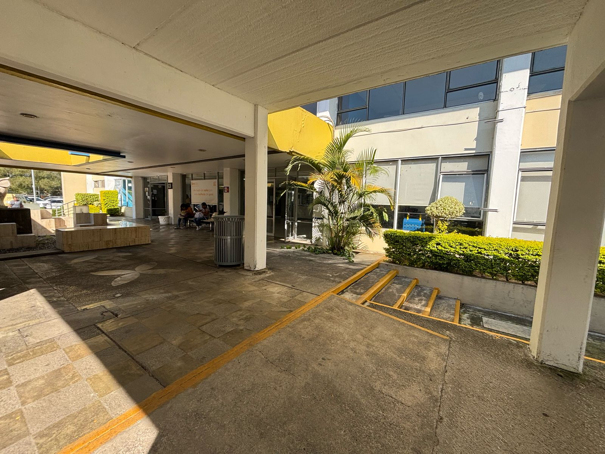

Información del Departamento
Jefe del Departamento de Huertos Urbanos: Mari Trini Flores Castañeda
Descripción: Oficina del PAI encargada de la educación ambiental y la sustentabilidad dentro de la institución
Actividades
- Faena general del HE
- Mantenimiento de parches polinizadores
- Capacitación SEDEMA
- Trabajo comunitario de limpieza en la Laguna del Chirimoyo
- Muestreo de polinizadores
- Muestreo Naturalista
Ubicación
A continuación, se muestra una imagen con la ubicación del departamento:
